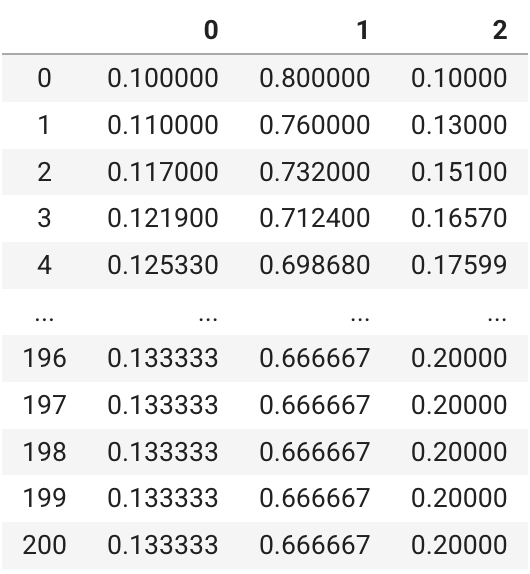
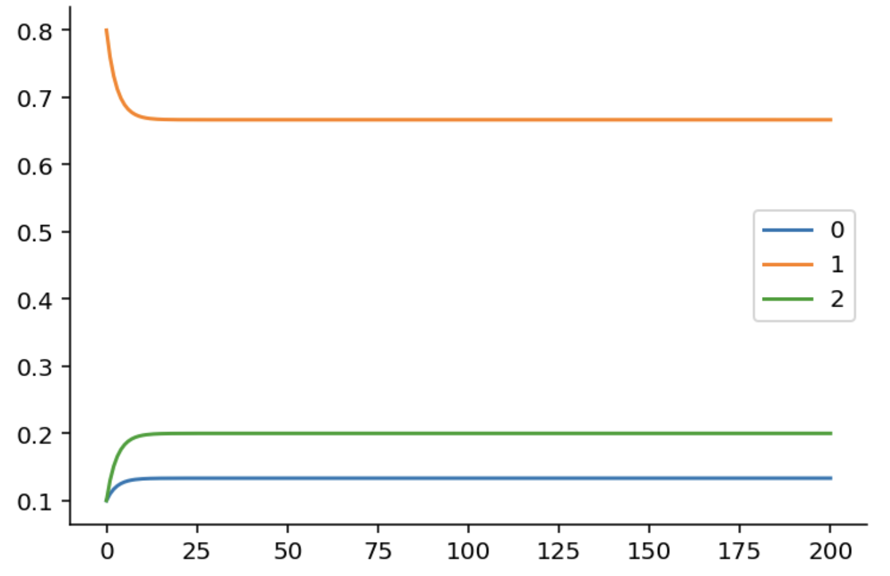

The project started with an eagerness to learn about Markov chains and implement them in Python. I began by writing a Markov chain (python-markov-chain/other-files/raw-markov-chain.py) using only the standard random library. After doing so, I learned that if I run a Markov chain long enough, the probability of each event reaches a constant value. This is the equilibrium (stationary) state, which is always the same regardless of the initial state, given the transition matrix remains the same

After this, I rewrote the Markov chain using NumPy and SciPy in the markov.py file. This version allows me to work with any number of states, uses the multinomial function in place of manual random thresholding, and makes the implementation cleaner and easier to work with. The markov chain also allows me to make drawing (Fig. 3), which has possible outcomes [0, 1, 2].

In Pure Data, I started experimenting with the else/pm6~ object, which is a six-oscillator FM synthesizer. The FM amount was controlled by the Python-driven Markov chains, affecting the timbre. The base frequency was also determined by a separate Python script and whenever Python sent a new value, the FM synth ramped to it over 2000 ms.
Alongside the FM synthesizer, there was a stereo base made from two slightly detuned sawtooth waveforms. The gliding sound used waveshaping on a sine wave with the add~ and wrap~ objects. I learned that a very simple way to implement soft clipping on these three sounds is to pass them through a tanh(3*$v1) function.
To add reverb to the noisy sound, I wrote a patch that is my interpretation of the Dattorro reverb algorithm (an implementation inspired by the Lexicon 224). I learned that a reverb can be thought of in two parts: input diffusion and decay diffusion. The input diffusion stage uses very short, sometimes phase-inverted delays to smear the sound and reduce percussiveness. The decay diffusion stage uses a feedback loop of all-pass filters to set the length and character of the decay tail. There is also slight modulation of delay times and phase to create randomness, which helps our brains perceive a physical space associated with the sound.
I wanted to implement visuals in Pure Data using the GEM library, which allowed me to open a window to render visuals, import objects and light sources, and manipulate them. I used the torus object (a "doughnut"), with translate object to position torus and rotate to turn it. I made four clones of the same chain of object to get multiple torus' on screen. The world_light object introduced a 3D feel by throwing light on all torus. The parameters of the rotate and translate objects were triggered by Markov chains (Fig. 3).
The visuals were particularly challenging because I have no prior experience, and some GEM objects and examples from the documentation did not work on my operating system. I also tried implementing a convolution reverb, but my version created a lot of latency, high CPU usage because of improper implementation and I learned it might be better done in C (which I don't currently know how to program).
In the process, I learned that Python can be a very strong way to send or save sequences of notes, algorithms, and generated values. It is relatively easy to create complex patterns and algorithms in Python. Else is a very extensive and powerful library in Pure Data that helped me use objects similar to those available in Max/MSP. GEM might not be my preferred way of running visuals; I think JavaScript libraries like p5.js are more powerful and easier to use.
In the future I think I want to implement more reverb algorithms in puredata and learn how the algorithms work. I also want to learn more about how puredata can run on embedded systems using frameworks like Heavy compiler and libpd.